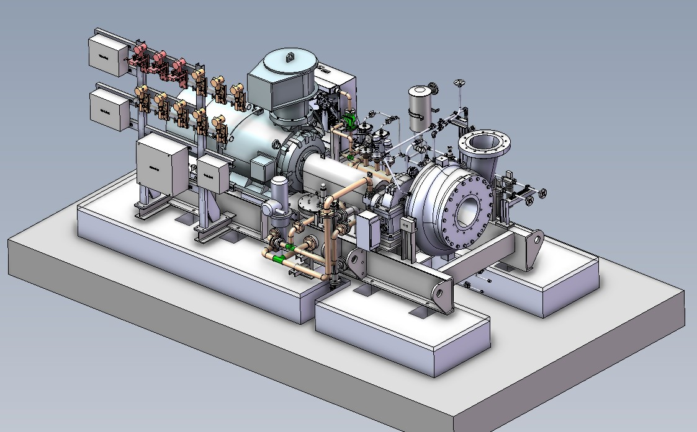
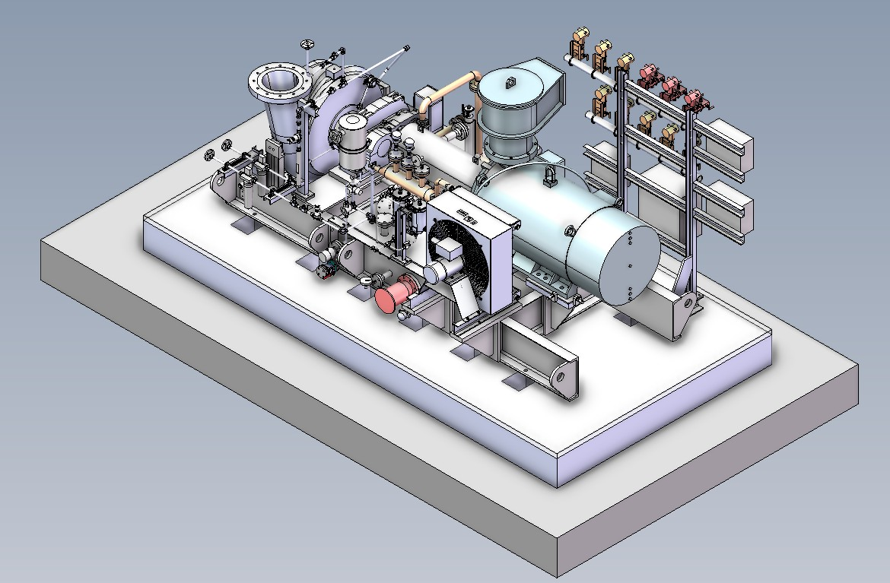
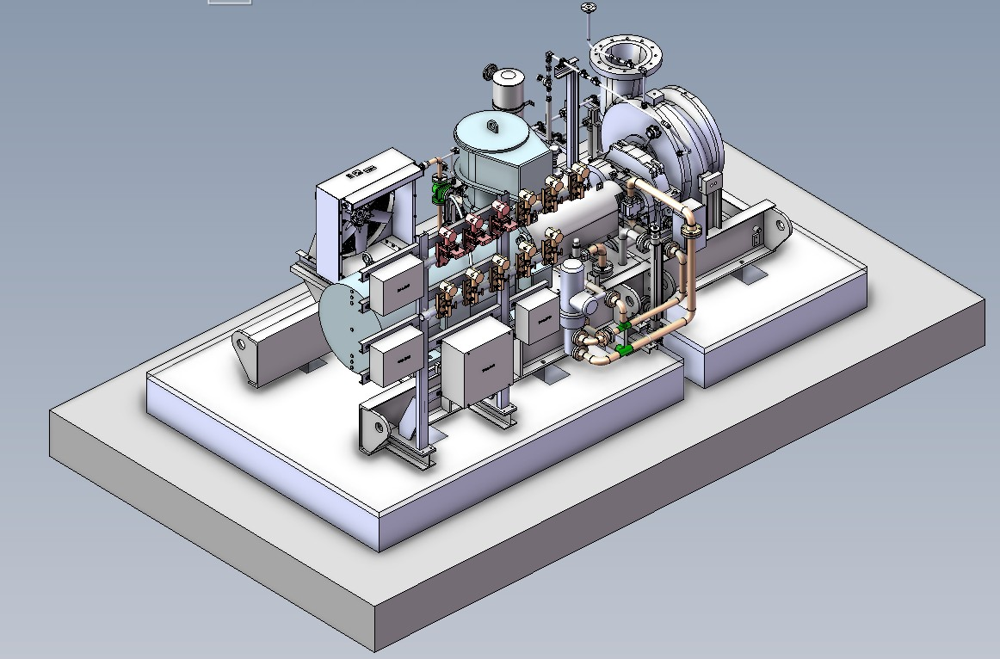
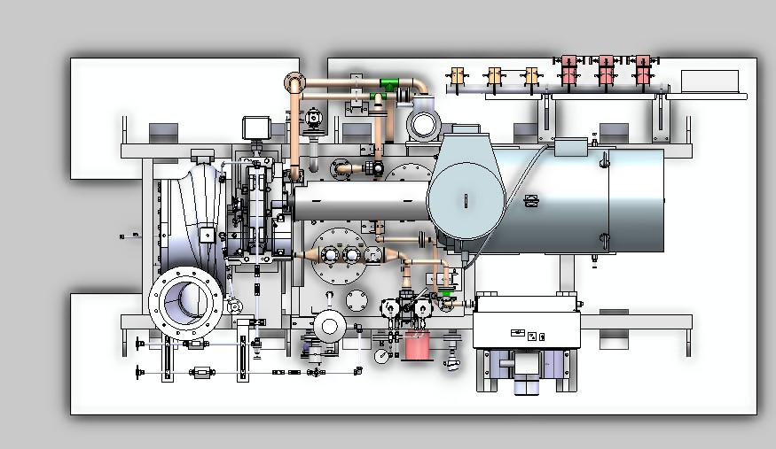

1-stage centrifugal compressor
Motor-driven through a gearbox, on a single base frame.
Single-stage boil-off-gas compressor package for Xiexing/LNG Rudong Co., China.

Motor-driven through a gearbox, on a single base frame.
LNG boil-off gas handled at cryogenic suction temperature.
3D modelling, package layout, lube oil, seal piping, instrumentation integration and drawing review.



Single-stage BOG compression with inlet throttle valve and anti-surge recycle, nitrogen seal-gas supply to the dry gas seals, and a lube-oil console with an air-cooled (fan) oil cooler.
A single-stage boil-off-gas compressor: an HV motor drives one high-speed pinion through a gearbox, lifting cryogenic BOG at −158.3 °C from 1.05 to 1.67 bar(a).
An inlet throttle valve sets the flow, nitrogen seal gas keeps the dry gas seal clean, a lube-oil console with an air-cooled fan cooler feeds the gearbox and bearings, and an anti-surge valve recycles gas at low flow.
Original illustrative animation based on my typical P&ID for this package · generic tags · Use the step buttons to walk through it.
DESIGNED: Complete 3D package model in SolidWorks, including base frame, lubrication system and assembled package equipment. Layout and detailed manufacturing/foundation drawings were developed in AutoCAD.
REVIEWED: 2D package and manufacturing drawings produced by subordinate designers. I also reviewed the stress-analysis report prepared by the analysis team and considered its implications for the package.
COORDINATED: Instrumentation placement, junction boxes, instrument panel interfaces, customer/vendor manufacturing coordination and purchasing inputs through MTO/BOM.
Created the complete 3D package arrangement and base frame, integrating the required equipment into a manufacturable layout.
Designed the 3D lube-oil system and integrated the required lubrication equipment on the package base frame.
Created seal piping and coordinated instrumentation, junction boxes and instrument-panel placement with the relevant teams.
Reviewed analysis-team stress results and checked implications for base-frame static structural requirements, equipment loads, lifting/crane arrangements and transportation requirements.
Developed AutoCAD layout/foundation drawings, reviewed manufacturing drawings and coordinated MTO/BOM information with purchasing.
Participated in technical reviews, manufacturing coordination and FAT activities.
The lube-oil console uses a fan-type air cooler rather than cooling water, so the package needs no cooling-water supply on site.
Handling −158 °C boil-off gas at the suction: low-temperature materials, allowance for thermal contraction in the piping, and nitrogen seal gas to keep the seals dry.
Delivering the complete 3D package, layout and foundation drawings in about 45 days of primary design.
Placing transmitter racks, junction boxes and the instrument panel on the package with the instrument team, keeping cable and tubing runs short.
Reviewing the analysis team’s stress report against base-frame, lifting, crane and transport cases and feeding the results back into the design.
Other equipment and components to the applicable universal standards.
FAT and SAT photographs are not published: mobile phones are not permitted on the factory floor under Atlas Copco policy, except on approved visits.
The project required careful integration of a cryogenic BOG service compressor with its lubrication, sealing, instrumentation and structural interfaces. My role combined hands-on 3D package design with drawing review and cross-functional coordination through manufacturing and FAT. At −158 °C suction, the package called for low-temperature materials on the suction side, nitrogen seal gas to keep the seals dry, and piping layouts that allow for thermal contraction.
← Back to projects